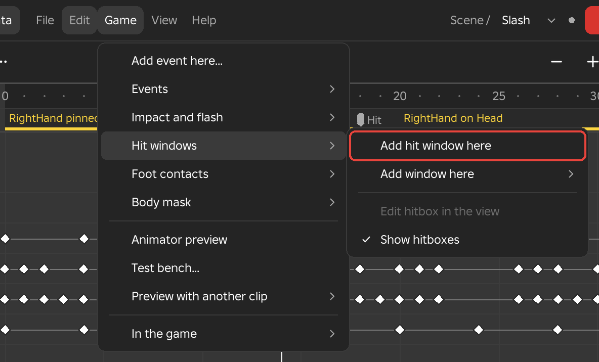
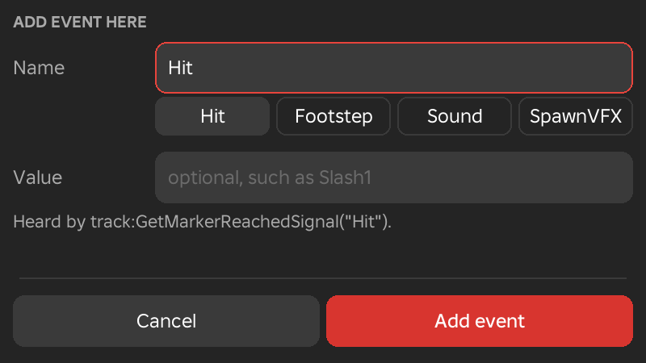
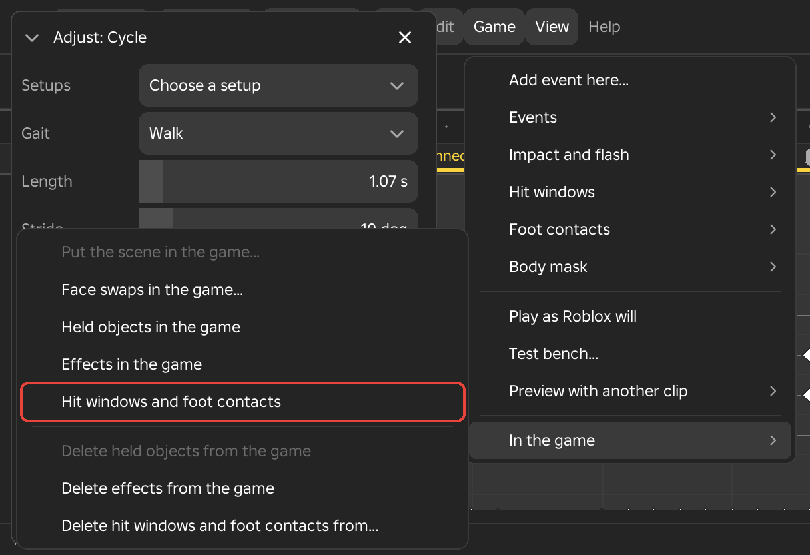

Game Menu
The Game menu holds what a game needs to know about a clip: events a script can hear, screen looks for hits, hit windows, foot contacts and body masks, the previews that show how Roblox will play the clip, and the scripts that carry all of this into your game. It shows in the Game data workspace.

Events
An event names a moment of the clip. When the clip plays in a game, a script can listen for that name and run its own code on that frame.
Add Event Here
- Menu
- Game ‣ Add event here...
- Right-click
- The timeline
- Workspace
- Game data
An event names a moment of the clip: Hit, Footstep, Sound, SpawnVFX or any word you choose, with an optional value such as Slash1 or Left. When you save, each event is written as a Roblox KeyframeMarker, and a game script receives it when the playing clip reaches that frame. Add event here... adds an event at the playhead. Several events can share a frame.
The dialog has the cursor in the name field with its text selected, so typing replaces the name. Press Enter to add the event. Each event appears as a pin on the events lane under the ruler, with its name beside it. Drag a pin to move every event on that frame, double-click it to change it, and right-click it to edit or delete.
The plus button on the Events row and Menu search (Ctrl+K) also add events.
Options
- Name
- The event's name. The field starts with the last name you used. Names are case-sensitive in a script, so Hit and hit are different events.
- Usual names
- The tiles under the Name field are Hit, Footstep, Sound and SpawnVFX, followed by names this clip already uses. Click one to fill the field.
- Value
- Optional text that the script receives with the event, such as Slash1 or Left.
- Add event
- Adds the event as one undo step. A line above the buttons shows how a script hears it.
Example
For example, put a Hit event on the frame where a sword swing connects, with the value Slash1, so the game deals damage on that frame. Footstep events with the values Left and Right on the frames where each foot lands let a script play step sounds.

See Also
Edit Event Here and Delete Event Here
- Menu
- Game ‣ Events ‣ Edit event here...
- Game ‣ Events ‣ Delete event here
- Right-click
- An event pin on the events lane
- Workspace
- Game data
Edit event here... changes the name and value of the event at the playhead. It opens the same dialog as Add event here, with a Save button and a Delete button. Delete event here removes the event. When two or more events share the frame, Edit event here lists them so you can choose one, and Delete becomes Delete events here and removes all of them. Each change is one undo step.
Both rows are greyed when the playhead is not on an event. On an Impact or Flash event, editing opens that event's page in the Inspector instead of the dialog.
Go to Event
- Menu
- Game ‣ Events ‣ Go to event ‣ Next event
- Game ‣ Events ‣ Go to event ‣ Previous event
- Workspace
- Game data
Next event and Previous event move the playhead to the next or previous frame that has an event. The status line names the events on that frame. Each row is greyed when there is no event in that direction, and the Go to event row is greyed when there is no other event at all.
Hearing Events in a Script
- Needs
- A game script
Each event fires AnimationTrack:GetMarkerReachedSignal(name) when the playing clip reaches its frame, and the event's value is passed to the function you connect.
local track = animator:LoadAnimation(attackAnimation) track:GetMarkerReachedSignal("Hit"):Connect(function(value) -- the event's value: "Slash1", or "" dealDamage(value) end) track:GetMarkerReachedSignal("Footstep"):Connect(function(foot) playStepSound(foot) -- "Left" or "Right" end) track:Play()
Notes
Events are saved with the clip, so publish the clip again after adding or changing them. An event placed after the last key makes the clip that long in the game, so it still fires.
Impact and Flash
An impact frame or a flash is a look the screen takes for a few frames, such as a white frame on a hard hit. Each one is an event with a look attached, and you build the look in the Inspector.
Impact Frame Here
- Menu
- Game ‣ Impact and flash ‣ Impact frame here
- Right-click
- The timeline
- Workspace
- Game data
Impact frame here adds an Impact event at the playhead and opens its page in the Inspector. The page builds a look for the hit: a washed-out or darkened world, a tint, the characters drawn as solid shapes, impact lines, a camera shake and zoom, and a freeze of the characters' animations. The new event starts from the look you used last for an impact, or White the first time. Double-clicking the event's pin opens the page again.
Every change is one undo step and shows in the viewport at once. Scrub across the event to see each frame of the look. The event's pin names the look and its length in frames. Lengths are counted in frames in Framez and are saved in seconds.
An impact can have several steps, one after another, each with its own length and its own look. The World, Figures and Lines sections belong to the selected step. The Camera, Hit-stop, Who and Timing sections belong to the whole look.
Options
- Select a look...
- Replaces the whole look with a starting point, which you can then change. White washes the world white and draws the characters as black shapes. Black darkens the world and draws the characters white. Mono is black and white with strong contrast. Tint is a red tint. Strobe is three one-frame steps of white, black and white. Flash is a bright white that fades out over 8 frames. Dark flash is a dark look that fades out over 10 frames. Your saved looks appear under My looks, with Rename look and Delete look.
- Name
- The look's name, shown beside the event.
- Save as my look
- Keeps the look under its name in My looks, available in every place. When a look with that name exists, Framez asks before replacing it.
- Step 1, Step 2 and the frame boxes
- Each Step button selects that step and moves the playhead to its first frame. The box beside it holds how many frames the step lasts, from 0 to 600.
- Add step, Delete step
- Add step puts a copy of the selected step after it. Delete step removes the selected step, and a look always keeps at least one.
- Brightness
- From -10 to 10. A value of 3 washes the world white and -3 turns it black.
- Contrast
- From -10 to 10.
- Saturation
- From -1 to 1. A value of -1 is black and white.
- Tint
- A colour typed as six hexadecimal digits such as FF3B30, or as three numbers such as 255 59 48.
- Solid figures
- Draws the characters as solid shapes over the world. When it is on, Fill and Outline set the colours, each with a See-through percentage, and Seen through walls lets the shapes show through scenery.
- Impact lines
- Draws lines that burst out from the character or from the middle of the screen. When it is on, Colour sets their colour, Count the number of lines (1 to 300), Thickness their width in pixels, Clear middle how much of the centre stays free (0 to 100 percent), Length how far they reach (0 to 200 percent) and See-through how faint they are. New lines every frame draws a fresh pattern each frame so the lines flicker. From chooses Character or Screen as the point they burst from.
- Shake, Shake speed, Zoom
- Shake moves the camera by up to 20 studs, Shake speed sets how many times a second it shakes (1 to 60), and Zoom changes the field of view by up to 60 degrees, with values below 0 zooming in. They show while the clip plays or while you look through a scene camera, and they follow the look's fades and strength.
- Freeze
- Holds the characters' animations still for this many frames, from 0 to 120, which gives the hit a hit-stop. It plays in the game and in Animator preview.
- Figures, Reach
- Figures chooses which characters are drawn as solid shapes, This character or Near it. Reach sets how close, in studs, a character must be to count as near, from 0 to 500. The default is 30.
- Seen by
- Its player shows the look only to the player whose character plays the clip. Everyone shows it to every player who sees the character play it.
- Fade in, Fade out
- How many frames the look takes to come in and to go out, from 0 to 600.
- Fade curve
- How the fades speed up and slow down. Choose a style from Steady, Hold, Smooth, Gentle, Snappy, Sharp, Overshoot, Bounce and Wobble, and where it slows from At the start, At the end, At both ends and In the middle.
- Strength
- Scales the whole look from 0 to 100 percent.
Example
For example, a finishing blow can start from Black, so the world drops to black for two frames and the characters appear as white shapes, with a Freeze of three frames to give the hit weight.
See Also
Flash Here
- Menu
- Game ‣ Impact and flash ‣ Flash here
- Right-click
- The timeline
- Workspace
- Game data
Flash here adds a Flash event at the playhead and opens the same page as an impact frame. It starts from the look you used last for a flash, or from the Flash starting point the first time: full on its first frame, and fading out. You change it the same way as an impact: add a fade in, make it a dark flash with a negative Brightness, give it a tint or choose any fade curve. All the options are described under Impact Frame Here.
Example
For example, put a flash on the frame where a spell is released, tinted blue, fading out over 12 frames.
Impact Frames and Flashes in the Game
- Menu
- Game ‣ In the game ‣ Effects in the game
- Needs
- The FramezEffects script in your game
Effects in the game adds the FramezEffects script, which plays impact frames and flashes whenever the clip plays. It plays every look as built. A look set to Seen by Everyone shows for everyone who sees the character play the clip, and a look set to Its player shows only for that player's own character. The screen option in the LocalScript changes which characters count as the player's own.
require(game:GetService("ReplicatedStorage"):WaitForChild("FramezEffects")).start({ screen = "all" })
Your own scripts can also listen for the events themselves with track:GetMarkerReachedSignal("Impact") and track:GetMarkerReachedSignal("Flash").
Hit Windows
A hit window marks a range of frames that the game reads: an attack that can hurt, a parry, invulnerable frames, or the frames in which a combo can be cancelled. Each window has a kind, a name, a first and last frame, an optional hitbox that follows a part of the rig, and any data fields the game wants. Windows show as bars on the Hit windows row under the rig, coloured by kind, and overlapping windows share the row in bands.
Add Hit Window Here
- Menu
- Game ‣ Hit windows ‣ Add hit window here
- Right-click
- The Hit windows row
- Workspace
- Game data
Add hit window here starts a Hit window at the playhead and selects it. The window is named Hit1, then Hit2 and so on, and it ends four frames after it starts. Its hitbox sits on the held weapon, or on the right hand when nothing is held, as a box a little larger than that part. Its data starts with one field, Damage, set to 10. The window opens on its page in the Inspector, described under Hit Window Page.
On the row, drag the middle of a bar to move the window and drag either end to trim it. Right-click a bar for Go to its start, Kind, Edit hitbox in the view, Duplicate and Delete. Del deletes the selected window and Esc lets go of it.
While the playhead is inside a window, its hitbox shows on the rig as a see-through box or ball with edges, and the selected window's hitbox is also shown, dimmer, outside it. Every timing tool and Mirror move and reflect the windows together with the keys, and undo keeps them.
Example
For example, add a Hit window over the frames where a sword's edge crosses the target, then set Damage to 25 and add a Knockback field of 30. A script in the game can then damage every character that the hitbox touches while the window is open.
See Also
Add Window Here
- Menu
- Game ‣ Hit windows ‣ Add window here
- Right-click
- The Hit windows row
- Workspace
- Game data
Add window here starts a window of the kind you choose at the playhead. The kind is a word that the game reads, and the window is named after it, such as Parry1. Only a Hit window starts with a hitbox and a Damage field. The other kinds start with neither, and you can give any of them a hitbox on its page. Each kind has its own colour on the row, and Hit is red.
Options
- Hit window
- A window in which an attack can hurt. It is the same window as Add hit window here.
- Parry window
- A window for a parry.
- Block window
- A window for a block.
- Invulnerable window
- A window in which the character is meant to take no damage.
- Cancel window
- A window in which the clip can be cancelled into another action.
- Combo window
- A window for the follow-up of a combo.
- Other
- A field where you type any other kind. Only letters, digits and underscores are kept, and pressing Enter adds the window.
Framez only marks the frames and keeps the kind's name. What each kind does in your game is decided by your scripts. A window of any kind is saved as a start marker and an end marker named after its kind, such as ParryStart and ParryEnd.
Example
For example, a Cancel window over the last six frames of a light attack tells the game that the player may start a dodge from those frames.
Edit Hitbox in the View
- Menu
- Game ‣ Hit windows ‣ Edit hitbox in the view
- Right-click
- A bar on the Hit windows row
- Workspace
- Game data
Edit hitbox in the view turns the selected window's hitbox into a real part in Studio's selection, so you can shape it in the viewport with Studio's own Move, Scale and Rotate tools. The window reads each change back, as one undo step, into its Size, Place on the part and Turn values. Click away to finish. The row is greyed until you select a window that has a hitbox, and a window with no part to sit on asks you to give it one in the Inspector first.
Example
For example, drag the box of a sword hit out to the length of the blade with the Scale tool, instead of typing three size values.
Show Hitboxes
- Menu
- Game ‣ Hit windows ‣ Show hitboxes
- Right-click
- The Hit windows row
- Workspace
- Game data
Show hitboxes is a switch that shows a tick while it is on, and it is on by default. It draws every hitbox in the viewport while the playhead is inside its window, and the selected window's hitbox all the time. Boxes are drawn with their edges, and a ball with three rings. With the switch off, no hitbox is drawn.
Hit Window Page
- Menu
- Inspector, while a hit window is selected
- Workspace
- Game data
The Inspector shows this page when you select a window on the Hit windows row. It is named after the window's kind, such as Hit window, and holds the window's frames, its hitbox and its data.
Options
- Name
- The window's name.
- Kind
- The window's kind. Changing it changes the window's colour and the names of its markers.
- Starts at, Ends at
- The first and last frame of the window.
- On
- The part or held object the hitbox moves with, or No hitbox. Held objects are listed first.
- Box, Ball
- The hitbox's shape.
- Size
- The hitbox's width, height and depth in studs. A ball uses the largest of the three as its diameter. Drag a number sideways or type a value.
- Place on the part
- How far the hitbox's centre sits from the part's centre, in studs along X, Y and Z.
- Turn
- How far the hitbox is turned relative to the part, in degrees about X, Y and Z.
- Edit in the view
- The same as Edit hitbox in the view.
- Fit to the part
- Sizes the hitbox to the part with a margin of 0.2 studs on each side, and clears its place and turn.
- Data fields
- Each field is a name and a value, with a Remove button. Numbers are saved as numbers, true and false as booleans and anything else as text. Add field adds an empty field, and the buttons beside it add common ones, such as Damage, Knockback, Stun, Element or Tag, with one click. Damage starts at 10.
- Duplicate, Delete
- Duplicate makes a copy that starts right after this window, with the same length and a new name. Delete removes the window.
Notes
The save writes a start marker at the window's first frame, such as HitStart, whose value is the window as JSON with its name, data and hitbox, and an end marker at its last frame, such as HitEnd, whose value is the window's name. Framez also keeps the windows exactly, so opening the saved clip brings them back.

Foot Contacts
Foot contacts record when each foot is on the floor. They show on the Foot contacts row as one strip for each foot, left above right, with a bar while the foot is down. A game uses them to play footstep sounds and dust at the right frames, and to start a walk and a run at the same step.
Find Foot Contacts
- Menu
- Game ‣ Foot contacts ‣ Find foot contacts
- Right-click
- The Foot contacts row
- Workspace
- Game data
Find foot contacts reads the contacts off the clip as it plays, animation layers and clip blocks included. For each foot, Framez finds the lowest point its sole reaches in the clip, and the foot counts as down for every stretch in which the sole stays within a small height of that point for long enough. The tool runs at once and replaces any contacts already on the row, and its values open in Adjust at the foot of the window, where changing a value makes the contacts again.
You can correct what Framez found by hand. Drag the middle of a bar to move it and drag an end to trim it, where the left end is the landing and the right end is the lift, and right-click a bar to delete it. The rig needs feet that Framez knows, and a rig with others can map them in Rig mapping.
Options
- Height
- How far above its lowest point a sole may rise and still count as down, in studs, from 0.01 to 5. The default is 0.25.
- Shortest
- The fewest frames a foot must stay down to count as a contact, from 1 to 60. The default is 2.
Notes
The save writes a FootDown marker at each landing and a FootUp marker at each lift, with the value Left or Right. Every timing tool moves the contacts, and Mirror swaps the feet.
Example
For example, run Find foot contacts on a walk cycle, check that each foot has one bar per step, and then add the game script so each landing plays a footstep sound.
See Also
Foot Down Here
- Menu
- Game ‣ Foot contacts ‣ LeftFoot down here
- Game ‣ Foot contacts ‣ RightFoot down here
- Right-click
- The Foot contacts row
- Workspace
- Game data
These rows add a contact by hand at the playhead. There is one row for each foot of the rig, and its label is the foot part's name followed by "down here", for example LeftFoot down here on an R15 rig. The contact starts at the playhead and lasts six frames. Drag its bar afterwards to move it, or trim its ends to the real landing and lift.
Example
For example, a hop animated with no walking cycle has no contacts for Find foot contacts to find, so add RightFoot down here on the landing frame and trim the bar to the frames of the squash.
Clear Foot Contacts
- Menu
- Game ‣ Foot contacts ‣ Clear foot contacts
- Right-click
- The Foot contacts row
- Workspace
- Game data
Clear foot contacts removes every contact from the clip as one undo step. It is greyed when there are none.
Body Mask
A body mask sets which parts of the rig a clip plays on in the game. The clip keeps every key in Framez, and the mask decides what is written when you save.
Body Mask
- Menu
- Game ‣ Body mask
- Inspector ‣ Clip ‣ In the game
- Workspace
- Game data
A clip with a mask saves keys only for the parts in the mask. In the game, the parts outside the mask play whatever animation plays beneath this one. An attack masked to Upper body plays over the run, so the character keeps running while it swings. With no mask the clip plays on the whole body.
The starting masks are made from the rig's own joints, so they work on R6, R15 and any rig mapped in Rig mapping. On R15, Upper body is everything above the waist. On R6, Upper body is the head and arms, and the torso stays with Lower body, because it turns the whole body. Mirror animation swaps every mask to the other side.
Options
- Whole body, Upper body, Lower body, Arms, Legs, Head
- The main masks. Whole body means no mask, and it is the default. One of these is selected at a time.
- More masks
- The rest of the starting masks: Left arm, Right arm, Left leg, Right leg and Arms and held objects. A rig that holds objects also has a Held objects mask. Masks you have kept in My masks are listed here too.
- My masks
- Appears once you have kept a mask of your own. It lists them, with Rename and Delete. Delete asks first.
- Edit mask...
- Opens the mask editor, described under Edit Mask.
- Add a masked copy
- Saves another clip from the same keys. It is described under Add a Masked Copy.
Notes
In the game a part plays fully or not at all, and any share above 0 counts as in. Shares between 0 and 100 percent play in Framez's animation layers and clip blocks, which have masks of their own.
Example
For example, mask a casting animation to Upper body so that a character can cast while it walks, and mask a wave to Arms so it plays over any idle.
See Also
Edit Mask
- Menu
- Game ‣ Body mask ‣ Edit mask...
- The Body mask list of a layer or a clip block
- Workspace
- Game data
Edit mask... makes any mask you like, as a name and the parts it covers, shown as the rig's tree. Each part is on or off and has a share. A share of 100 percent plays all of the part and 50 percent plays half. The same editor opens from every Body mask list, including those of animation layers and clip blocks, and its title says which one it is editing. While it is open, the parts in the mask show in red on the rig.
Options
- Name
- The mask's name.
- Start from
- Tiles that fill the mask from Whole body, one of the starting masks, one of your own masks or Nothing. Choosing one also takes its name.
- Part list
- Every part of the rig, indented as its tree. The tick turns the part on or off, and the share box beside it sets its percentage.
- All below
- Gives every part under that part the same share.
- Click in the viewport
- Clicking a part on the rig adds it to the mask or takes it out.
- Keep in My masks
- Saves the mask in the plugin's settings so every place lists it under More masks.
- Use mask
- Applies the mask. A mask with every part at 100 percent is the same as Whole body.
Add a Masked Copy
- Menu
- Game ‣ Body mask ‣ Add a masked copy ‣ Upper body
- The same list for Lower body, Arms, Legs, Head and your own masks
- Workspace
- Game data
Add a masked copy saves another clip from the same keys beside this one, with a mask of its own. The copy's name is the clip's name followed by an ending: _UPPER, _LOWER, _ARMS, _LEGS or _HEAD for the main masks, and _MASKED for a mask of your own, numbered when the ending is already taken. The copies are written every time you save, after the _MOVING copy, and the Inspector's Clip page lists them with their masks and a way to delete each one.
Example
For example, a heavy attack saved with an _UPPER copy gives the game two clips from one animation: the full-body clip to play when the character stands still, and the upper-body clip to play over the run.
Previews
These rows show how the clip plays in Roblox, alone or with another save of the same rig.
Animator Preview
- Menu
- Game ‣ Animator preview
- Workspace
- Game data
Animator preview plays the clip on a see-through copy of the rig that stands beside it, through Roblox's own Animator, which is what a game uses. The clip is saved the way the game receives it, with eased spans baked into poses and holds written as constant poses, but it is registered with Roblox only for as long as Studio stays open, and nothing is stored. Anything that differs between the copy and the rig is something your game would show differently. The row shows a tick while the preview is on, and choosing it again turns it off.
While Framez is not playing, the copy shows the frame at the playhead as Roblox works it out. After an edit it updates once you pause for a moment. Parts that Roblox places away from where Framez has them are tinted red. Each event's name flashes over the copy's head, and in the status line, as Roblox fires it, hit windows flash as their markers are reached, and the copy's face follows the clip's face markers. The Compare tab of the Test Bench sets where the copy stands, how it is drawn and how far apart a part must be before it is tinted. By default it stands beside the rig and tints a part that is more than half a degree or 0.01 studs away.
Example
For example, before publishing a skill, switch Animator preview on, play the clip, and watch for red parts or events that fire on a different frame from the one you keyed.
See Also
Test Bench
- Menu
- Game ‣ Test bench...
- Workspace
- Game data
Test bench... opens a floating window that tests how the clip plays in Roblox: in a running game on your character, joined to the clips around it, on other body shapes, under a game camera, and against other versions of itself. It has one tab for each of these, Game, Transitions, Bodies, Camera and Compare. The row shows a tick while the window is open. Closing the window takes away everything the bench made. The tabs and their values are described on the Test Bench page, starting with the Test Bench Window.
See Also
Game Tab, Transitions Tab, Bodies Tab, Camera Tab, Compare Tab
Transition To
- Menu
- Game ‣ Preview with another clip ‣ Transition to
- Workspace
- Game data
Transition to previews how another clip joins this one. Choose another save of the rig from the list, and Framez plays the last half second of that save, then this clip from its start, with a fade of 0.1 seconds between them. It plays once on the rig, for up to a second and a half of this clip, and the rig returns to the pose at the playhead afterwards. The list shows the saves of this rig, or a greyed note when there are none.
Stop ends a transition that is playing, and is greyed when none is.
Example
For example, check that a skill comes cleanly out of the run by choosing the run save from the list, or that an attack settles back into the combat stance by choosing the stance.
Blend With
- Menu
- Game ‣ Preview with another clip ‣ Blend with
- Workspace
- Game data
Blend with plays this clip and another save of the rig together in a Roblox Blend1D, on the see-through copy beside the rig, through Roblox's own Animator. A Blend1D mixes two clips by a number, and what you see is what a Blend1D in your game's animation graph will do. Choose the save from the list, drag Blend value to mix the two, and set where each clip sits on the scale. Closing the box stops the preview.
A Blend1D keeps its clips at the same fraction of their own loops. Two cycles therefore blend cleanly only when each foot lands at the same fraction in both. Under the fields, a ruler shows both clips' feet across their own loops, from 0 to 100 percent. A light bar is a foot on the floor and a red mark is where it lands, and a line of text says whether the clips are in step. Match steps fixes a clip that is out of step.
Options
- Blend value
- Where the mix sits on the scale between the two clips. The default is 0.5. Drag it, or type a number.
- This clip at
- This clip's place on the scale. The default is 0.
- Other at
- The other save's place on the scale. The default is 1. With these two settings a blend value of 0 plays only this clip and 1 plays only the other, and the places can be moved to other numbers.
- Feet ruler
- Shows both clips' feet across their own loops, with the landings marked in red.
- Match steps
- Retimes this clip so its feet land where the other clip's do.
- Close
- Closes the box and stops the preview.
Example
For example, blend a walk with a run and drag the blend value from 0 to 1 to watch the walk turn into the run, or blend an idle with a guard stance to see how the pose eases between them.
Match Steps
- Menu
- Game ‣ Preview with another clip ‣ Blend with ‣ the Match steps button
- Workspace
- Game data
Match steps retimes this clip so its left foot lands at the same point of its loop as the left foot does in the other clip, and it stretches each half of the loop to match the right foot as well. Every key moves, and no key is added except at the start and end of the loop. Events, weapon switches and face keys move with their frames. The ruler and the blend update at once, and one Ctrl+Z puts the timing back.
If the two clips are already in step, Framez says so and changes nothing. A foot that never lands in either clip is named, and nothing changes. Match steps also refuses when the clip has animation layers, which must be merged into the base first, when a limb that has keys is locked, when a limb does not loop, when both feet land on the same frame, and when two keys of one limb, or two face keys, would land on one frame. It never merges keys, so delete one of the two or make the clip longer.
Example
For example, a walk and a run that will blend in the game should have their left and right footfalls at the same fractions of their loops. Run Match steps on the run, then drag the blend value again to check that the feet no longer slide.
Additive
- Menu
- Game ‣ Preview with another clip ‣ Additive
- Workspace
- Game data
Additive plays another save of the rig added over this clip, through Roblox's Add node, on the see-through copy beside the rig. The other save is read as a change from the rest pose, which is the form that Additive animation makes, so a breath, a flinch or a lean layers over this clip. Choose the save from the list and drag Weight to change how much of it is added. Closing the box stops the preview.
Options
- Weight
- How much of the added clip shows, from 0 to 2. The default is 1.
- Close
- Closes the box and stops the preview.
Example
For example, add a saved breathing clip over a run to see the chest rise on top of the stride, and raise the weight to see how far the motion can be pushed.
Directional Blend
- Menu
- Game ‣ Preview with another clip ‣ Directional blend...
- Workspace
- Game data
Directional blend... plays up to five saves in a Roblox Blend2D on the see-through copy beside the rig: an idle at the centre, and then forward, back, left and right. Each save has an X and a Y place, where X is positive to the right and negative to the left, and Y is positive forward and negative back. The Play button starts the preview, and then you steer it live.
Framez suggests a looping save for each place from the saves' names, such as an IDLE or STANCE save for the centre and a RUN or WALK save for forward, and you can change every choice. In your game, put the same clips in a Blend2D at the same places, and set X and Y from the move direction in the character's own space. Roblox mixes the nearest clips between the places, so you do not need a full grid.
Options
- Centre, Forward, Back, Left, Right
- Each row selects a save for that place. The choices are None, This clip and the other saves of the rig. At least two places need a save.
- X, Y
- The place of each save, from -10 to 10. The defaults are 0 and 0 for the centre, 0 and 1 forward, 0 and -1 back, -1 and 0 left and 1 and 0 right.
- Play
- Starts the preview and opens the steering box.
- Steering box
- Drag the X and Y fields, or the red handle on the pad, to steer the blend. The values stay within the places you set.
- Close
- Closes the box and stops the preview.
Example
For example, put the combat stance at the centre and the four strafe cycles around it, press Play and drag the handle round the pad to check how the cycles mix before you build the graph for your game.
In the Game
These rows add scripts to your game, or take them out again. Each script reads what Framez saved in the clip and does the work when the clip plays. They are added to the place you have open. If Studio stops Framez from adding scripts, allow Script injection for Framez in Manage Plugins on the Plugins tab.

Put the Scene in the Game
- Menu
- Game ‣ In the game ‣ Put the scene in the game...
- Workspace
- Game data
- Needs
- An open scene
Put the scene in the game... opens the dialog that writes the open scene into the game, with its player, its start and the scripts it needs. It is the same command as Put in the game in the Scene menu, and it is greyed until a scene is open.
Face Swaps in the Game
- Menu
- Game ‣ In the game ‣ Face swaps in the game...
- Right-click
- A Face row in the track list
- Workspace
- Game data
Face swaps in the game... says whether this game has the face script and adds it. The script is a ModuleScript named FramezFace in ReplicatedStorage and a LocalScript named FramezFaceClient in StarterPlayerScripts. A dot and a line at the top of the dialog say whether the script is not in the game yet, is in the game but an older version, or is up to date. The script swaps classic faces while clips play, as described under Faces in the Game.
Options
- Add it to this game, Update it, Add it again
- One button whose label depends on the dot. It adds the two scripts, replaces an older version or adds the current version again.
- Show the script
- Shows the text of both scripts in a box. Click the text and press Ctrl+C to copy it.
- Delete
- Removes both scripts. One undo brings them back.
Held Objects in the Game
- Menu
- Game ‣ In the game ‣ Held objects in the game
- Workspace
- Game data
Held objects in the game adds a ModuleScript named FramezHeld to ReplicatedStorage and a LocalScript named FramezHeldClient to StarterPlayerScripts. With them, every clip in which an object changes holders moves the object in the game too, for every player, and puts it back when the clip stops. An object held by a mesh bone follows that bone as well. When the game already has the scripts, Framez asks before replacing them.
Example
For example, a clip in which a character draws a sword from its back and sheathes it again moves the sword from the back to the hand and back in the game, with no script of your own.
Effects in the Game
- Menu
- Game ‣ In the game ‣ Effects in the game
- Workspace
- Game data
Effects in the game adds a ModuleScript named FramezEffects to ReplicatedStorage and a LocalScript named FramezEffectsClient to StarterPlayerScripts. They play impact frames, flashes and squash and stretch from any clip saved by Framez, on any character. They also play the effects keyed in Framez (Effects on the timeline) and any keyed property (Key any property) from the clip. An effect that the game's character does not have is copied from ReplicatedStorage.FramezVFX, which every save writes.
FramezEffects plays every look as built. A look set to Seen by Everyone shows for everyone who sees the character play it, and Its player shows only for that player's own character. The screen option in the LocalScript changes which characters count as the player's own, as shown under Impact Frames and Flashes in the Game.
Notes
Run it again on a game that already has FramezEffects to bring the script up to date with VFX packs. If the game's copy differs from the one Framez carries, Framez asks before replacing it, and it never overwrites a FramezEffectsClient that is already there, so a screen option you set stays.
Hit Windows and Foot Contacts
- Menu
- Game ‣ In the game ‣ Hit windows and foot contacts
- Workspace
- Game data
Hit windows and foot contacts adds a ModuleScript named FramezGameData to ReplicatedStorage. It turns a clip's hit windows into hits and its foot contacts into footsteps, on the server or on a client.
local GameData = require(game.ReplicatedStorage.FramezGameData) local track = animator:LoadAnimation(attackAnimation) GameData.hits(track, character, function(hit) -- each character the hitbox touches, once per window hit.humanoid:TakeDamage(hit.data.Damage) end) GameData.footsteps(track, character, stepSound) -- a Sound, played at the foot track:Play()
The module also has GameData.windows(track, { "Parry" }, onStart, onEnd) and GameData.isOpen(track, "Parry") for any kind of window, and GameData.phase(track) and GameData.sync(walkTrack, runTrack), which start a run at the walk's step. The first lines of the module list every call. On a rig with mesh bones it finds a bone by its name or role, and plays footsteps at a foot bone's place.
Delete Held Objects from the Game
- Menu
- Game ‣ In the game ‣ Delete held objects from the game
- Workspace
- Game data
Delete held objects from the game takes FramezHeld and FramezHeldClient out of the game. It asks first, because undo does not bring them back. The row is greyed when the game has no held object script. To add them again, use Held objects in the game.
Delete Effects from the Game
- Menu
- Game ‣ In the game ‣ Delete effects from the game
- Workspace
- Game data
Delete effects from the game takes the FramezEffects script out of the game, and its LocalScript too unless you changed it. Ctrl+Z brings them back. To add them again, use Effects in the game.
Delete Hit Windows and Foot Contacts from the Game
- Menu
- Game ‣ In the game ‣ Delete hit windows and foot contacts from the game
- Workspace
- Game data
Delete hit windows and foot contacts from the game takes FramezGameData out of the game. Ctrl+Z brings it back. To add it again, use Hit windows and foot contacts.